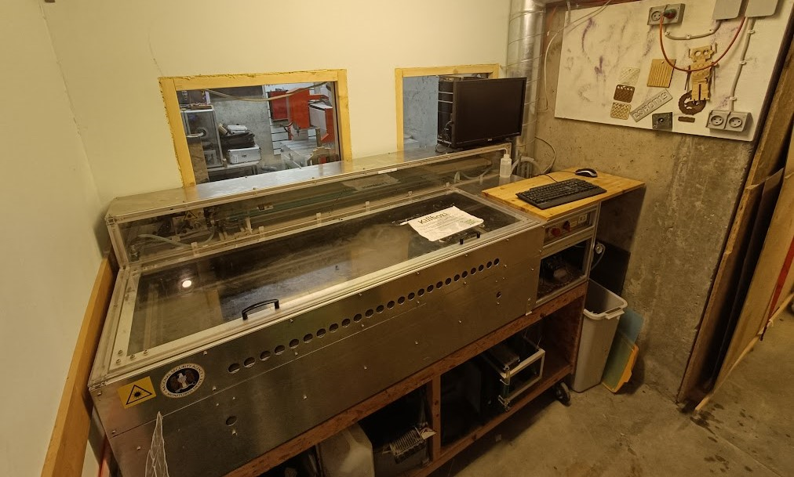

I Open Space Aarhus kan du stifte bekendtskab med vores hjemmebyggede laser cutter. Den blev bygget tilbage i 2011, og mere information om den kan findes på vores wiki side.
På vores laser cutter har du mulighed for at skære og gravere i visse pladsmaterialer samt træ, læder osv.
